Notes Linear Regression - Standford ML Andrew Ng
Jose Parreno Garcia
March 2018
- 1 What is linear regression?
- 2 What is the best possible fitting line?
- 3 Accurate model comparison (normalisation of the model).
- 4 Careful with the data.
- 5 Basic Supervised learning algorithm
- 6 Hypothesis for univariate linear regression
- 7 Cost function - intuition
- 8 Gradient Descent Algorithm
- 9 Multivariate linear regression
- 10 Truck prediction problem
library(knitr)1 What is linear regression?
Linear regression is one of the most (if not the most) basic algorithms used to create predictive models. The basic idea behind linear regression is to be able to fit a straight line through the data that, at the same time, will explain or reflect as accurately as possible the real values for each point.
Linear regression is used when you want to compare a variable (normally called a dependant variable), against one or more other variables (called independent variables). Intuitively, the variable we want to compare is called dependant variable because the results will depend on which other variables are you comparing it to. Mathematically speaking, the dependant variable is equivalent to the y axis, and the independent variables are plotted against the x axis. Let’s begin with a very simple example:
We might want to know what the relationship is between unemployment rate and the amount of murders in a city. In this case, we choose the amount of murders as the dependant variable and the unemployment rate as the independent variable.
**Dataset source: http://people.sc.fsu.edu/~jburkardt/datasets/regression/x08.txt**
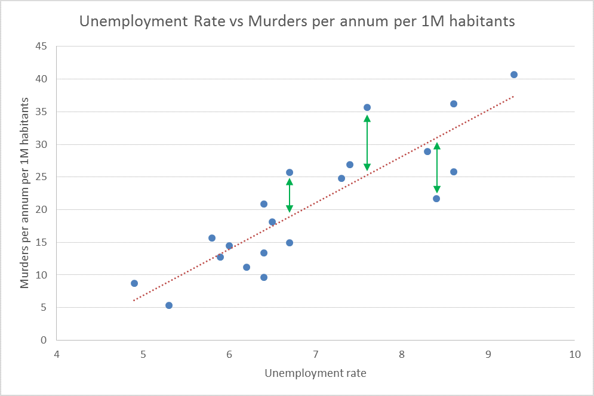
2 What is the best possible fitting line?
Before getting into a bit of maths, let’s try to intuitively understand why is the red line shown the best possible fitting line and not any other. To do this, recall the idea that the line should try to reflect as accurately as possible the data we have, and observing the graph, for many examples, there are obvious gaps between the blue points and the red line! These are the errors (green lines) we need to try to minimise.
2.1 Introducing a bit of math.
Ok, so now that we know at a high level what does linear regression do and what would be our goal to get the best possible fitting line, let’s introduce the mathematical model that describes linear regression.
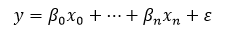
where \(y\) is the dependant variable, \(\beta_i\) is the parameter that adjusts the weight of example \(x_i\) and \(??\) is the error terms that the model would introduce even when all independent variables where equal to 0. Lets use again our previous example of murders vs unemployment rate and lets calculate the error for the best possible fitted line and another different line. Here you can see a small subset of the examples:
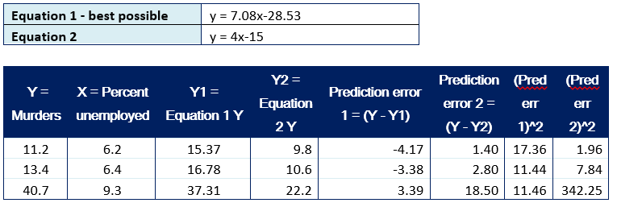
By choosing different \(??_i\) (7.08 and 4) and \(??\), (28.53 and 15), we get different linear equations, and with these we see we get different errors, which as we know, means the lines don’t fit perfectly the data. Intuitively we can think that the best possible fitted line will have the lowest sum of all errors between the real example and the prediction made by the linear model. Here are the values for the total errors for both linear equations:
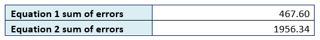
We can see that the total errors for the best fitting line is less than the other random line, which matches our understanding of how linear regression should work. In the following graph you can graphically see the differences between line 1 and line 2.
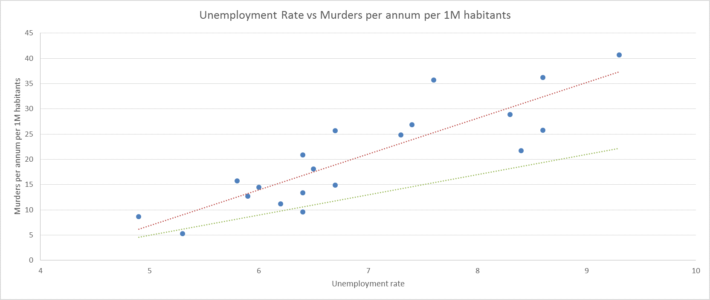
3 Accurate model comparison (normalisation of the model).
Even though the total error example is quite easy to understand, this is not the correct way to evaluate part of a model performance. To explain, let me use an example:
1 - Imagine we have the same dataset: murders vs unemployment rate and the sum of errors for the best fitted line is 467.60 2 - Imagine we also have a dataset comparing government social investment vs unemployment rate and that the sum of errors for the best fitted line is 100000.
Can we directly compare both models? NO. The reason is that the variables used having totally different scales, hence, we cannot simply use the magnitude of the error to say that one model is better than the other. So, what do we use? To do this we use the COEFFICIENT OF DETERMINATION, commonly known as R-squared. The most important property of R-squared is that it ranges from 0 to 1, being 1 a perfect match between the predicted model and the real data. These are the formulas that determine R-squared: Image source: http://www.slideshare.net/21_venkat/correlation-regression-17406392
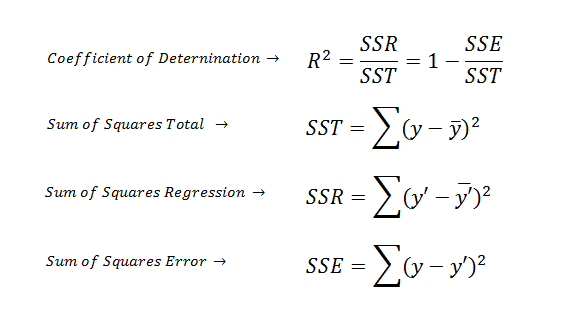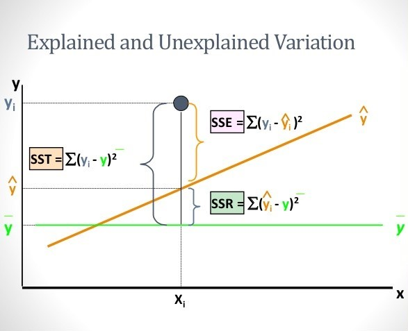
A very useful dataset to see the effect of different variables in the R-squared of different models is data gathered by Orley Ashenfelter when he wanted to predict wine quality (reflected by price of the wine) without tasting it. What will happen to the performance of the linear model when adding more variables:
**Note: this example is extracted from the Analytics Edge course in the online learning platform edX https://www.edx.org/course/analytics-edge-mitx-15-071x-2**
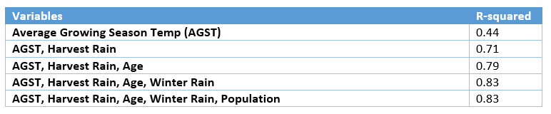
So, in this case, with different combinations of variables, we get different results for R-squared. Just for the sake of curiosity, adding the “population” variables doesn’t increase the accuracy of our model, which intuitively makes sense, as the quality of a wine should have nothing to do to the number of people living in the area were the grapes were grown.
4 Careful with the data.
Until now, everything we have seen, follow a logic stream and is easy to understand, but there is still an important clarification to make. Even though the idea behind R-squared is relatively easy to understand, you must never rely solely on this metric. You should always plot the data to graphically check what it looks like. Let me illustrate why is this necessary with an example. There is a very famous dataset which is commonly known as the Anscombe’s quartet. This dataset has a very curious property (among others): it has approximately the linear regression line for each case and approximately the same correlation even though the dataset are completely different!
**Image source: https://en.wikipedia.org/wiki/Anscombe%27s_quartet#/media/File:Anscombe%27s_quartet_3.svg**
{kind=link}
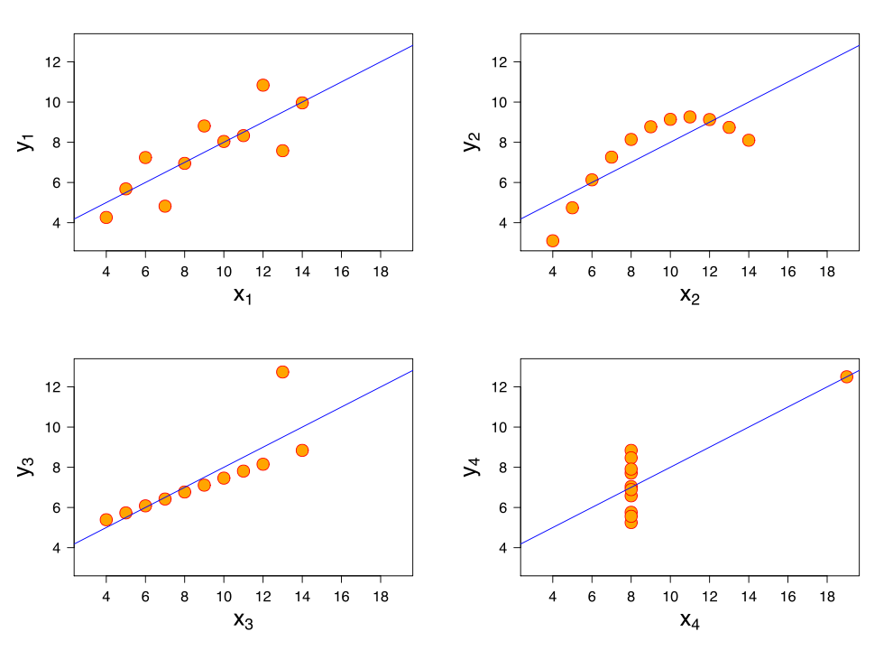
It is very clear that linear regression would be totally acceptable in case 1, more or less acceptable in case 3 if we deal with the outlier, and absolutely not acceptable for cases 2 and 4. This shows the importance not throwing yourself into model creation without some previous understanding of the data!
5 Basic Supervised learning algorithm
- Say that we have a certain training dataset.
- We feed the training data into a learning algorithm
- We create a hypothesis.
- Test the hypothesis inputting data and predicting outcome hypothesis.
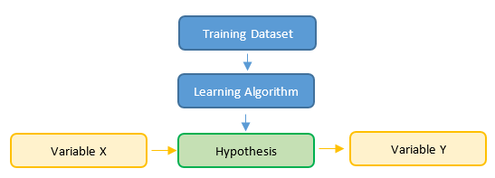
6 Hypothesis for univariate linear regression
Hypothesis. The hypothesis formula should seem familiar to you as it represents a linear equation. In this case, our output (our hypothesis) is dependant of the value of x. The theta values are the ones we want to choose to fit the data as perfectly as possible.
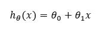
Goal. Minimize the squared error difference between our predicted hypothesis and the actual value of y. This total errors can be seen as a cost, eg, the bigger the total errors, the bigger cost you would have, and hence, the idea is to minimize a cost function.
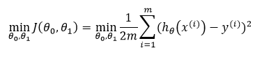
Notation: \(J\) = cost function. \(m\) = total number of training examples. \(x^{(i)}\) = i-th training example \(y^{(i)}\) = i-th actual value
7 Cost function - intuition
Ok, this cost function might seems a bit scary for those of you who do not feel comfortable with maths. I will try to use a numeric example to help you understand this. Let’s simplify the example and eliminate the independent term \(\theta_0\):
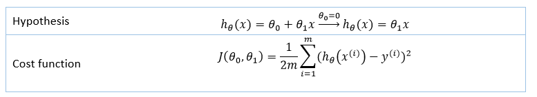
The following table shows in initial data (blue colour) and the different hypothesis outputs we get when changing \(theta_1\):
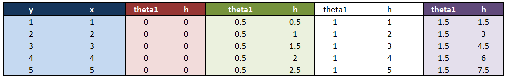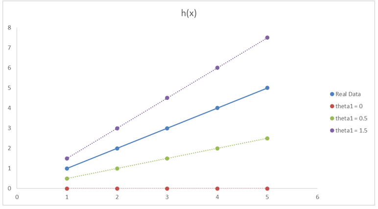
It is quite obvious that \(??_1 = 1\) (white columns) would be the best choice as it fits perfectly the real data! All other possibilities (purple, green, red lines) are different from the real data, and therefore will have an error associated with it. So, how does these different possible \(??_1\) values affect the cost function \(J\)?
We calculate the squared difference for each example \(y\) and hypothesis \(h\). Then we add all error as the sum of sq. errors, and finally we apply the cost function equation to get \(J\):
 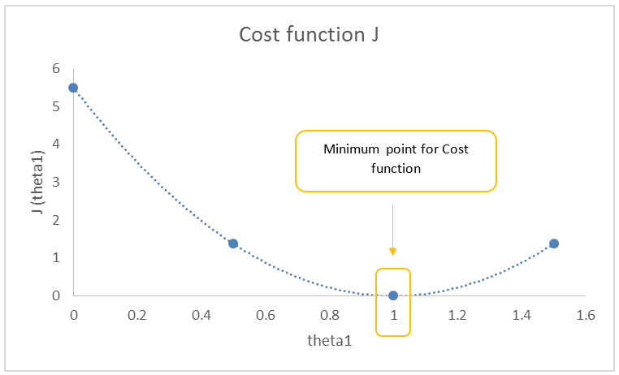
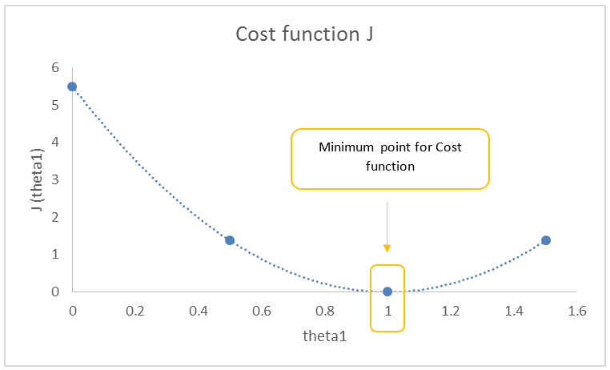
8 Gradient Descent Algorithm
Ok, we as humans are able to say with a single glance that minimum point for the cost function would correspond to a combination of \(??_0 = 0\), \(??_1 = 1\). But, how does the machine get to this point? What steps does it have to follow in order to choose from infinite combinations, which is the best pair, the one that minimizes the cost function? To do this, we introduce Gradient Descent. Gradient descent is an iteration process that updates the values of the \(??\) parameters until we reach convergence, in other words, it is a process that keeps updating \(??\) until there is no difference in the last repetition (because we have reached the minimum and there is no better solution to update with a different value).
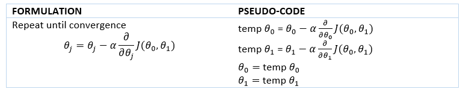
Again, this formulation might be a bit overwhelming for those not comfortable with maths, especially as we introduce partial derivatives. In addition, we have introduced a new parameter ?? that we haven’t yet defined. So, let’s try to explain how gradient descent works with a graphic example.
8.1 Partial derivatives.
It graphically represents the slope of the curve on a certain point. The important information we need from the slope is if it’s positive or negative.
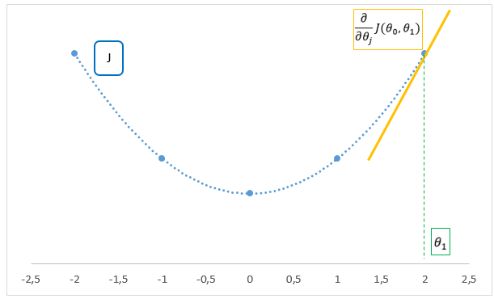
In this case, we have a positive slope, therefore, we have a positive term for the partial derivatives in the equation. Taking into consideration that alpha is positive, then applying gradient descent, the next step will update theta with a smaller value, and therefore, getting closer to the minimum!
8.2 Effect of alpha.
Alpha is a positive constant and there are 2 main extreme effects that could jeopardize the implementation of gradient descent:
- Alpha too small: a minimum will be found, but it will take too many operations to find it. Slow but accurate.
- Alpha too big: as alpha is too big, the steps taken might be too big, and therefore, we might be jumping over the minimum without reaching it. Quicker but we might be able to converge.
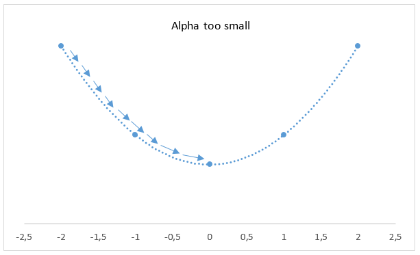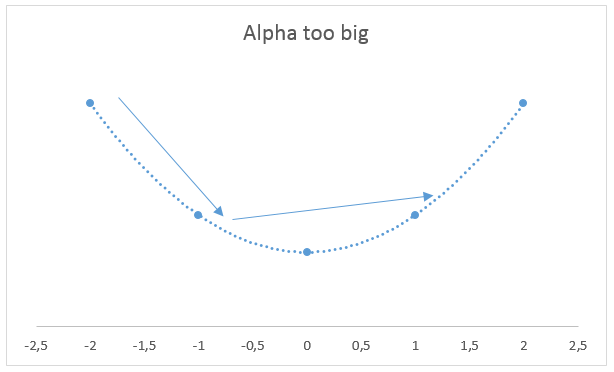
8.3 Gradient descent for univariate linear regression
So once understood how gradient descent works, let me formulate the equation and apply it for the case of 1 variable using linear regression.
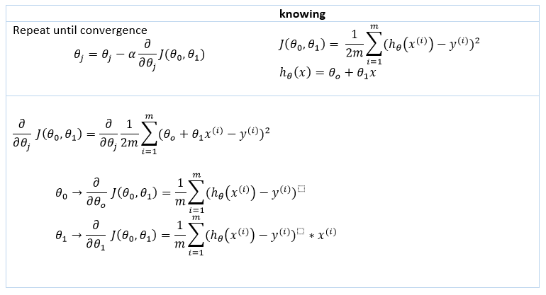
9 Multivariate linear regression
I wanted to divide the explanation of linear regression in 2 posts: univariate (1 single independent variable) and multivariate (when the linear model includes more than 1 independent variable). I think that understanding what happens with 1 variable is essential to then follow easily how the algorithm is affected with the introduction of more variables.
9.1 Formula and notation
Let’s introduce a simple example to show what we mean by having a linear model with multiple independent variables.
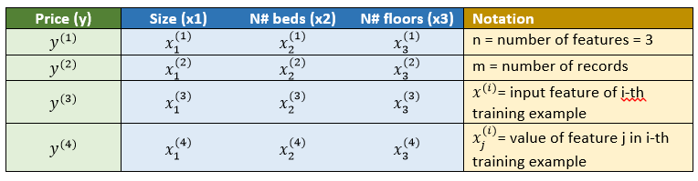
We want to predict house prices (variable \(y\)), and we have 3 different features (\(x_1\), \(x_2\), \(x_3\)). How would our hypothesis function look like? And what would be the general formula?
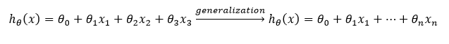
This formula looks fine on paper, but if you want to implement it in code, the best idea would be to vectorise it (throughout all theory posts, the final goal will be always to vectorise formulas).
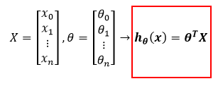
9.2 Gradient descent for multiple features
Recall the formulas used for univariate linear regression:
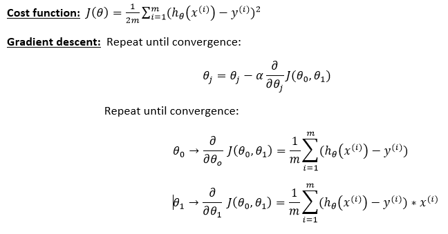
The only change that will differentiate gradient descent for multiple features will be the generalization of the formula for univariate linear regression gradient descent. In fact, the previous formula will be replace for the generalised one because it covers both the univariate and multivariate situation.
Gradient descent: Repeat until convergence:
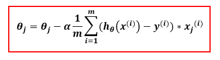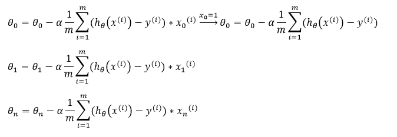
9.3 Changes to gradient descent: feature scaling
There are 2 main ideas behind feature scaling: 1. For intuition purposes it is easier to compare 2 features that are normalised. For example how to compare: 1.1. \(x_1\): size (range from 10-2000 m2) 1.2. \(x_2\): number beds (range from 1-10) 1.3. They are 2 variables with very different ranges and this is difficult to compare directly with a single number.
- For running / debugging purposes, feature scaling speeds up the algorithm and tends to find the minimum quicker.
Two way to normalise features:
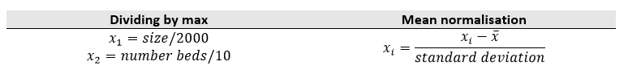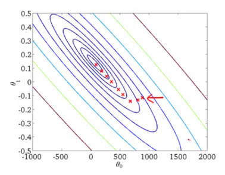
9.4 Changes to gradient descent: learning rate
Recall we saw what happened with different learning rates for univariate linear regression (it could be really slow or it could even diverge and not reach a minimum)
In this section we will make sure that gradient descent is working correctly with a debugging method. We understand that, with every iteration of gradient descent, there is an update of the \(\beta\) values that reflect in smaller magnitudes of the cost function, which imply we are moving towards a minimum. With that premise, the idea is to plot the cost function \(J\) against the number of iterations we are using in the gradient descent loop.
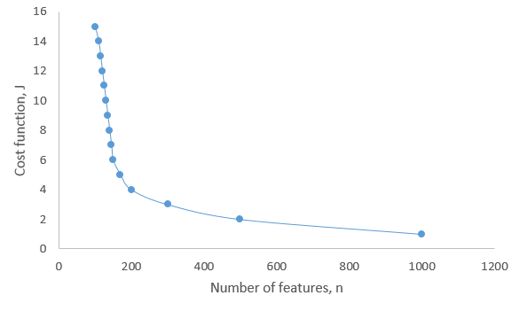
Example where we would say gradient descent is not converging:
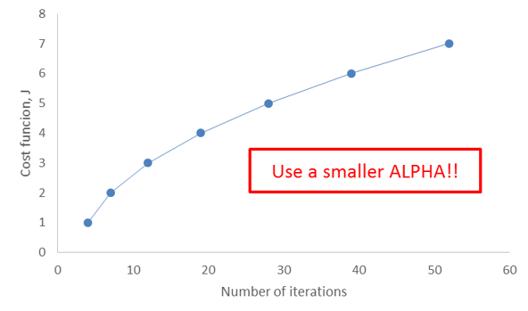
9.5 Computing parameters: normal equation
In this section, we will introduce another method to solve the THETA values. Until now, we have seen how to calculate a linear model to adjust the data using and remember, that do this, we used gradient descent which is an iterative process. As we saw, 2 of the main problems gradient descent has are: 1.The need of feature scaling, 2.The need of choosing alpha. These can be supressed with the introduction of the normal equation. To explain it lets introduce a numeric example:
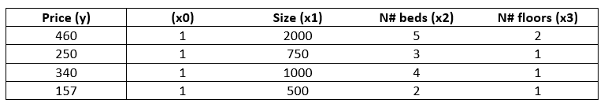
I am not going to demonstrate the steps in order to get the final theta formula, but it can de shown that using a vectorised approach, we can analytically calculate theta parameters using:
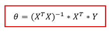
It seems that using the normal equation is much simpler than using gradient descent right? Well, as always, there are caveats when using it. If you haven’t yet guessed, its main problem is when dealing with a lot of features. Say for example we have more than 10,000 features:
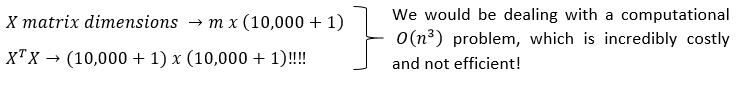
9.6 When to use it
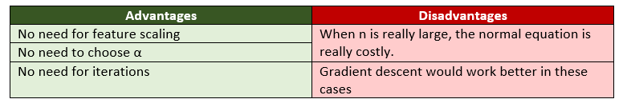
10 Truck prediction problem
10.1 Problem
Suppose you are the CEO of a restaurant franchise and are considering different cities for opening a new outlet. The chain already has trucks in various cities and you have data for profits and populations from the cities. You would like to use this data to help you select which city to expand to next.
10.2 Visualising the data
Data sample:
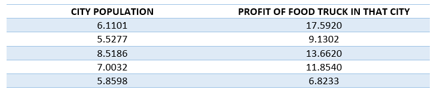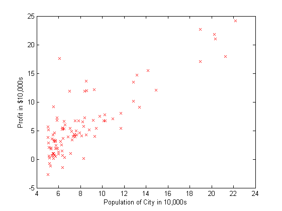
10.3 Gradient descent
In order to find the best fit linear equation, in other words, to find the linear equation which has the lowest cost function, we apply the gradient descent iterative process to calculate the \(??\) parameters which define the linear equation.
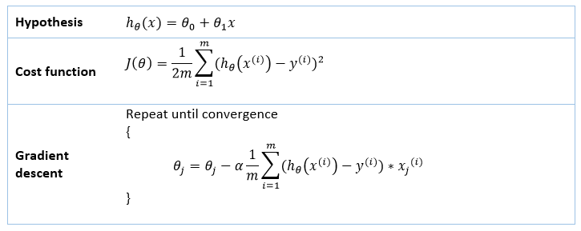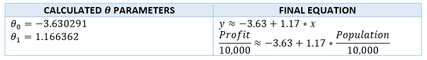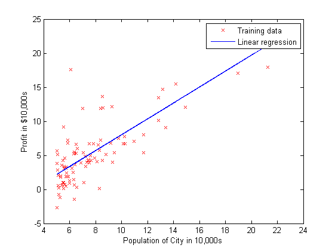
10.4 Checkig results
Obviously, achieve a result like the one shown above is by itself something to be proud of, but of course, we need to check if this solution has actually reached a minimum in the cost function. We will do this by plotting the cost function against the number of iterations done by gradient descent.
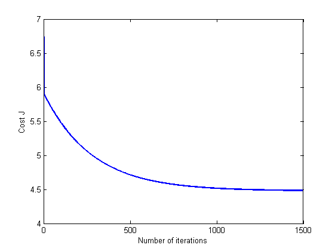
It seems that gradient descent is doing a good job and throughout the iterations, the cost function (remember, the sum of squared errors) is decreasing until it gets to a point where it seems it flattens out. To double check that the flattening out happens because we have reached a minimum in the cost function, lets plot the gradient descent.
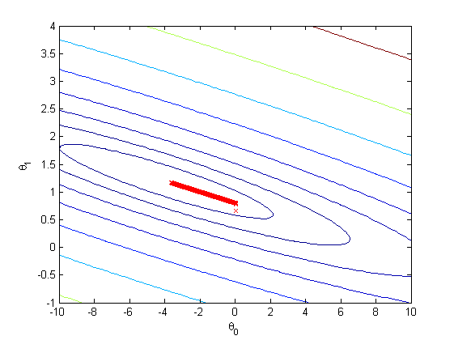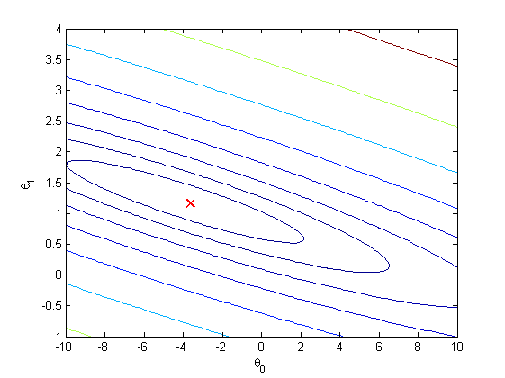
It can be seen that the sequence of \(\theta\) values seems to move towards the minimum (which would be the center of the contour plot). So again, with this evidence we could say that the linear equation we have found is the best possible fit. However, remember to always try to understand your data, just as we did in the initial step. Maybe a different order equation might fit the data better!